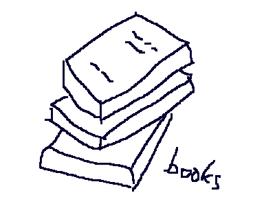
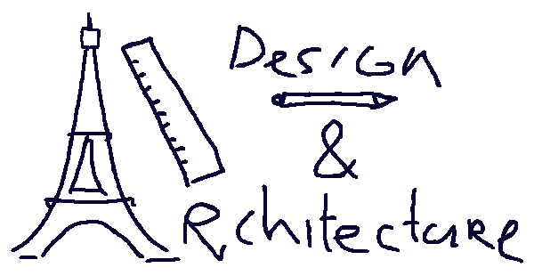
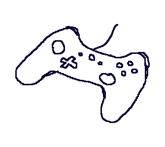
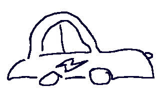

I tried to make some sketches around this page to represent things I enjoy.
I have a lot of different interests, but some of the main things I like to do when not working are:
Going for walks through nature or (foreign) cities. While outside I often go through code or other projects
in my head. It helps me to order things and find creative solutions more easily than when staring at a screen.
Or otherwise I set my mind on other stuff or nothing in particular and just enjoy the surroundings.
I love music. I like discovering new artists and also play a little guitar myself
(I'm not very good but it's still a lot of fun!). Some day I also want to learn to play the piano.
And finally I just always like to learn and discover new things
through books, online articles, videos, podcasts or personal experience... I find almost anything can be fun
and interesting when you delve into it. The last few months I've been learning Italian for at least
a few minutes per day.
Tim de Waard

About
Hey everyone, I'm Tim. I'm from the Netherlands. I used to be a law student specialising
in Law and Technology, but I gradually discovered that I find technology itself
a lot more fun and interesting than arguing about it as a lawyer! (shocker)
This year I decided to chase my dream of becoming a programmer and I'm really excited to
start making it happen at Codaisseur and meet you all on October 5th.




Interests




Projects

Tetris with Phaser.js
My first code practice project was building a Tetris game. The code is a bit of a mess
but it seems to work :) It was a lot of fun to make and I learned a lot from it. You can
play it by clicking the image if you like.
I'm looking forward to doing new projects with you!